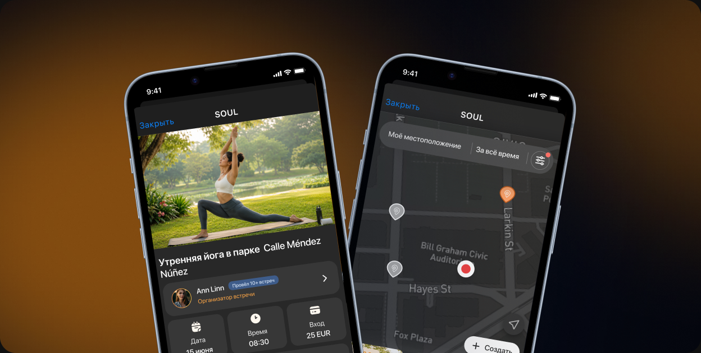

Продукт и аудитория
Soul помогает соло-путешественникам, экспатам, диджитал-номадам и новым жителям города находить живое общение через встречи рядом.
Как исследование помогло сделать поиск и выбор встречи понятнее

Soul помогает соло-путешественникам, экспатам, диджитал-номадам и новым жителям города находить живое общение через встречи рядом.
Понять, где пользователь теряет контекст при поиске встречи и что мешает принять решение о записи.
Восстановить пользовательские сценарии уже разрабатываемого приложения и собрать их в единую карту. Найти разрывы между поиском, выбором и записью на встречу: где не хватает информации, теряется контекст или непонятен следующий шаг.
Приложение уже разрабатывалось без единого user flow. Я собрала существующие сценарии в общую карту, чтобы зафиксировать логику переходов и получить целостное представление о продукте.
Приоритизировала не отдельные дефекты интерфейса, а барьеры, которые мешали принять решение о записи на встречу.
Кнопка находилась внизу, адрес был разделён между блоками, а важные детали скрывались под «Читать больше».
25 EUR, 600 SP и «первый гость» не складывались в понятные правила участия.
У организатора не было подтверждённого опыта и оценок реальных участников.
Если вынести фильтры по месту и времени наверх, показывать превью по тапу на метку и различать метки по типу, пользователь сможет сравнить встречи прямо на карте и открывать детальную карточку осознанно, а не наугад.
Сравнивает варианты по расстоянию и типу до перехода в карточку — не тратит время на открытие каждой карточки.
Ожидаемый эффект: меньше случайных переходов и больше осознанных записей. Требует проверки.
Если собрать адрес, формат входа, бонус и подготовку в одном блоке вместо распределения по экрану, пользователь примет решение и запишется без возврата к длинному описанию.
Не прокручивает карточку в поисках ответа — все условия видны сразу.
Ожидаемый эффект: меньше отказов при просмотре карточки. Требует проверки.
Разделила наблюдения, продуктовые гипотезы и будущие метрики, чтобы не выдавать качественные данные за рост конверсии.
Пользователи находили фильтры, сравнивали встречи через превью, понимали пустую выдачу и видели основное действие.
Рейтинг доверия снизит барьер записи, а создание встречи из пустой зоны поддержит рост предложения.
Успешность поиска, долю пустой выдачи, переход из превью в карточку и конверсию в запись.
Провела исследование, синтезировала и приоритизировала проблемы, перестроила два ключевых экрана, описала сквозной сценарий и согласовала ограничения поиска с разработчиками.
Исследование проведено на небольшой выборке; количественный эффект решений предстоит проверить на объёме.